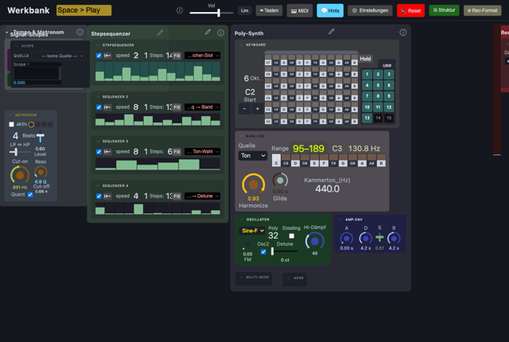
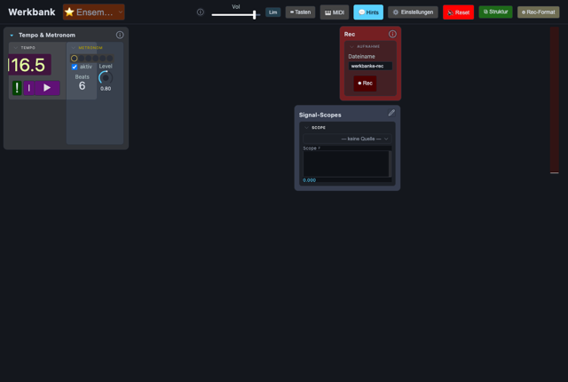

Modularer Synth-Baukasten im Browser. Ein Ensemble wählen und loslegen:

Voller Baukasten: Takt/Metronom, Poly-Synth, Stepsequenzer, Rec, Meter, Signal-Scopes.
→ öffnen
Neutrales Basis-Scaffold (nur Takt/Metronom, Rec, Meter, Signal-Scopes) – Kopiervorlage für neue Projekte.
→ öffnen